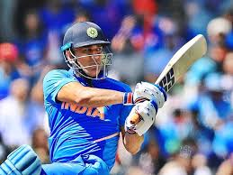

Chess is a board game for two players. It is sometimes called international chess or Western chess to distinguish it from related games such as xiangqi (Chinese chess) and shogi (Japanese chess). Chess is an abstract strategy game that involves no hidden information and no elements of chance. It is played on a chessboard with 64 squares arranged in an 8×8 grid.

Carrom is a tabletop game of Indian origin in which players flick discs, attempting to knock them to the corners of the board. In South Asia, many clubs and cafés hold regular tournaments. Carrom is commonly played by families, including children, and at social functions. Different standards and rules exist in different areas.

A card game is any game that uses playing cards as the primary device with which the game is played, whether the cards are of a traditional design or specifically created for the game (proprietary). Countless card games exist, including families of related games (such as poker). A small number of card games played with traditional decks have formally standardized rules with international tournaments being held, but most are folk games whose rules may vary by region, culture, location or from circle to circle. Traditional card games are played with a deck or pack of playing cards which are identical in size and shape. Each card has two sides, the face and the back. Normally the backs of the cards are indistinguishable. The faces of the cards may all be unique, or there can be duplicates. The composition of a deck is known to each player. In some cases several decks are shuffled together to form a single pack or shoe. Modern card games usually have bespoke decks, often with a vast amount of cards, and can include number or action cards. This type of game is generally regarded as part of the board game hobby.
Ludo is a 2020 Indian Hindi-language black comedy crime film written and directed by Anurag Basu.[2] It stars an ensemble cast of Abhishek Bachchan, Aditya Roy Kapur, Rajkummar Rao, Pankaj Tripathi, Fatima Sana Shaikh, Sanya Malhotra, Rohit Suresh Saraf, and Pearle Maaney.[3][4] It was produced by T-Series Films, Anurag Basu Productions and Ishana Movies.[5] The film was released on 12 November 2020 coinciding with Diwali on Netflix, receiving positive reviews with praise towards its screenplay, cinematography, music, direction, and performances of the cast.[1] At the 66th Filmfare Awards, Ludo received a leading 16 nominations, including Best Film, Best Director (Basu), Best Actor, Best Actor (Critics) (both for Rao), Best Actress (Critics) (Malhotra), and Best Supporting Actor (Tripathi), and won Best Music Director (Pritam).

For the video game adaptation, see Uno (video game). For other uses, see Uno. Uno Logo since 2016 Designer Merle Robbins Publisher International Games (until 1992) Mattel (since 1992) Type Shedding-type Players 2–10 players[1] Skills Hand management Age range 7+[1] Cards 112[2] Playing time Varies Chance High Uno cards Uno (/ˈuːnoʊ/; from Spanish and Italian for 'one'), stylized as UNO, is a proprietary American shedding-type card game originally developed in 1971 by Merle Robbins in Reading, Ohio, a suburb of Cincinnati, that housed International Games Inc., a gaming company acquired by Mattel on January 23, 1992.[3] Played with a specially printed deck, the game is derived from the crazy eights family of card games which, in turn, is based on the traditional German game of mau-mau. History The game was originally developed in 1971 by Merle Robbins in Reading, Ohio, a suburb of Cincinnati. When his family and friends began to play more and more, he and his family mortgaged their home to raise $8,000 to have 5,000 copies of the game made.[4] He sold it from his barbershop at first, and local businesses began to sell it as well. Robbins later sold the rights to Uno to a group of friends headed by Robert Tezak, a funeral parlor owner in Joliet, Illinois, for $50,000 plus royalties of 10 cents per game. Tezak formed International Games, Inc., to market Uno, with offices behind his funeral parlor. The games were produced by Lewis Saltzman of Saltzman Printers in Maywood, Illinois.

Cricket is a bat-and-ball game that is played between two teams of eleven players on a field, at the centre of which is a 22-yard (20-metre) pitch with a wicket at each end, each comprising two bails balanced on three stumps. Two players from the batting team (the striker and nonstriker) stand in front of either wicket holding bats, with one player from the fielding team (the bowler) bowling the ball towards the striker's wicket from the opposite end of the pitch. The striker's goal is to hit the bowled ball with the bat and then switch places with the nonstriker, with the batting team scoring one run for each exchange. Runs are also scored when the ball reaches or crosses the boundary of the field or when the ball is bowled illegally.
Gillidanda is played with two pieces of equipment – a danda, being a long wooden stick, and a gilli, a small oval-shaped piece of wood. It is played with four or more players of even numbers. The boy on left is about to strike the gilli with the danda, while the one on right is fielding. Standing in a small circle, the player balances the gilli on a stone in an inclined manner (somewhat like a see-saw) with one end of the gilli touching the ground while the other end is in the air. The player then uses the danda to hit the gilli at the raised end, which flips it into the air. While it is in the air, the player strikes the gilli, hitting it as far as possible. Having struck the gilli, the player is required to run and touch a pre-agreed point outside the circle before the gilli is retrieved by an opponent. There are no specific dimensions of gillidanda and it does not have a limited number of players. The gilli becomes airborne after it is struck. If a fielder from the opposing team catches the gilli, the striker is out. If the gilli lands on the ground, the fielder closest to the gilli has one chance to hit the danda (which has to be placed on top of the circle used) with a throw (similar to a run out in cricket). If the fielder is successful, the striker is out; if not, the striker scores one point and gets another opportunity to strike. The team (or individual) with the most points wins the game. If the striker fails to hit the gilli in three tries, the striker is out (similar to a strikeout in baseball). After the gilli has been struck, the opposing players need to return to the circle or, in the best case, catch it in mid-air without it hitting the ground – this was believed to have later evolved into a Catch Out in cricket and baseball.